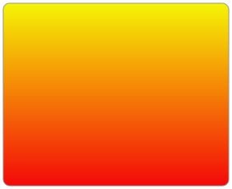

<DOCTYPE html>
<html>
    <head></head>
    <body>
            <svg width="800px" height="800px" viewBox="0 0 800 800"
            version="1.1" xmlns="http://www.w3.org/2000/svg"
            xmlns:xlink="http://www.w3.org/1999/xlink"> <!-- Note that this is required in order to use xlink in the <use> element. -->
       
         <!-- THIS EXAMPLE NOT SUPPORTED IN INTERNET EXPLORER -->
         
         <title>Simplest SVG Animation</title>
         <desc>SVG declarative animation is used to rotate a square.</desc>
       
         <!-- Create a Cartesian coordinate system (with the y-axis flipped) for the animated square. 
              That is, place the origin at the center of the 800 x 800 SVG viewport. -->
         <g transform="translate(400, 400)"> 
         
           <!-- A 200 x 200 square with the upper left-hand corner at (-100, -100). This places the center 
                of the square at the origin (0, 0): -->  
           <rect x="-100" y="-100" width="200" height="200" rx="5" ry="5" 
                 style=" fill: orange; stroke: black; stroke-width: 3; stroke-dasharray: 10, 5;">
             <animateTransform 
               attributeType="xml"
               attributeName="transform" type="rotate"
               from="0" to="90"
               begin="0" dur="5s" 
               fill="freeze"
             />
           </rect>
           
           <line x1="-400" y1="0" x2="400" y2="0" style="stroke: black;" /> <!-- Represents the x-axis. -->
           
           <line x1="0" y1="-400" x2="0" y2="400" style="stroke: black;" /> <!-- Represents the y-axis (although up is negative and down is positive). -->  
               
         </g>
       </svg>

        <svg xmlns="http://www.w3.org/2000/svg" version="1.1" height="190">
            <polygon points="100,10 40,180 190,60 10,60 160,180"
            style="fill:lime;stroke:purple;stroke-width:5;fill-rule:evenodd;" />
        </svg>
        

        <svg width="320" height="320" xmlns="http://www.w3.org/2000/svg">
            <g> 
              <text font-family="microsoft yahei" font-size="120" y="160" x="160">马</text>
              <animateTransform attributeName="transform" begin="0s" dur="10s" type="rotate" from="0 160 160" to="360 160 160" repeatCount="indefinite"/>
            </g>
        </svg>
    </body>
</html>